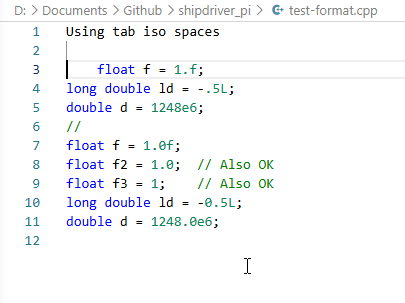
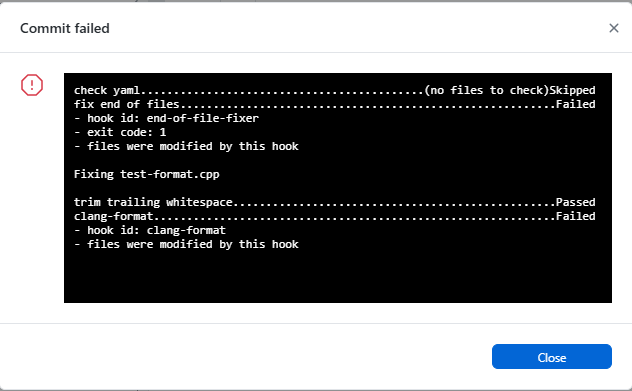

Pre-commit on windows example
General steps
One route known to occasionally work:
-
Install python as administrator on the command line using chocolatey:
choco install python -
Start Windows Settings | Apps.
-
Scroll to the Python app, click Modify
-
In python app settings, click Modify.
-
Check the Py Launcher checkbox, click Next
-
Click Install.
-
Install pre-commit on the command line using
py -m pip install pre-commit. This often creates warnings about missing PATH; these can be ignored. -
On the command line in the plugin directory activate pre-commit in the project using
py -m pre_commit install
More detailed example
Python already installed on Windows 11
Python had already been installed with chocolatey.
The 'py' command was not available.
Either add the py launcher as of above or get Python Install Manager
from the Microsoft Store.
Python 3.14.6 was then installed.
Using the command line py -m pip install pre-commit resulted in warnings about the
paths missing for parts of the pre-commit installation.
These can be ignored. However:
Installing collected packages: distlib, pyyaml, platformdirs, nodeenv, identify, filelock, cfgv, python-discovery, virtualenv, pre-commit -------- ------------------------------- 2/10 [platformdirs] WARNING: The script nodeenv.exe is installed in 'C:\Users\rasba\AppData\Local\Python\pythoncore-3.14-64\Scripts' which is not on PATH. Consider adding this directory to PATH or, if you prefer to suppress this warning, use --no-warn-script-location. WARNING: The script identify-cli.exe is installed in 'C:\Users\rasba\AppData\Local\Python\pythoncore-3.14-64\Scripts' which is not on PATH. Consider adding this directory to PATH or, if you prefer to suppress this warning, use --no-warn-script-location. -------------------------------- ------- 8/10 [virtualenv] WARNING: The script virtualenv.exe is installed in 'C:\Users\rasba\AppData\Local\Python\pythoncore-3.14-64\Scripts' which is not on PATH. Consider adding this directory to PATH or, if you prefer to suppress this warning, use --no-warn-script-location. WARNING: The script pre-commit.exe is installed in 'C:\Users\rasba\AppData\Local\Python\pythoncore-3.14-64\Scripts' which is not on PATH. Consider adding this directory to PATH or, if you prefer to suppress this warning, use --no-warn-script-location. Successfully installed cfgv-3.5.0 distlib-0.4.3 filelock-3.29.4 identify-2.6.19 nodeenv-1.10.0 platformdirs-4.10.0 pre-commit-4.6.0 python-discovery-1.4.2 pyyaml-6.0.3 virtualenv-21.5.1
'C:\Users\rasba\AppData\Local\Python\pythoncore-3.14-64\Scripts' was added to PATH. The command prompt was closed.
With a new command prompt ran py -m pip install pre-commit. pre-commit installed without warnings.
On first using pre-commit:
>git commit --allow-empty -m "With pre-commit added"`
[INFO] Initializing environment for https://github.com/pre-commit/pre-commit-hooks. [WARNING] repo `https://github.com/pre-commit/pre-commit-hooks` uses deprecated stage names (commit, push) which will be removed in a future version. Hint: often `pre-commit autoupdate --repo https://github.com/pre-commit/pre-commit-hooks` will fix this. if it does not -- consider reporting an issue to that repo. [INFO] Initializing environment for https://github.com/pre-commit/mirrors-clang-format.
>pre-commit autoupdate --repo https://github.com/pre-commit/pre-commit-hooks
This updated pre-commit from version 2.0 to version 4.6.0.
Another commit to test pre-commit.
>git commit -m "pre-commit updated"
[ERROR] Your pre-commit configuration is unstaged. `git add .pre-commit-config.yaml` to fix this.
>git add .pre-commit-config.yaml
A test_format file with format errors was added to the repo.

>git commit -m "For testing pre_commit"
A tab had been used instead of spaces. pre-commit changed the tab to spaces. The lines without the 0 e.g.
long double ld = -.5L; //Should read long double ld = -0.5L;
The commit failed.

Editing is now needed for the commit to work. In most cases the editing is done, and committing again makes the trick.